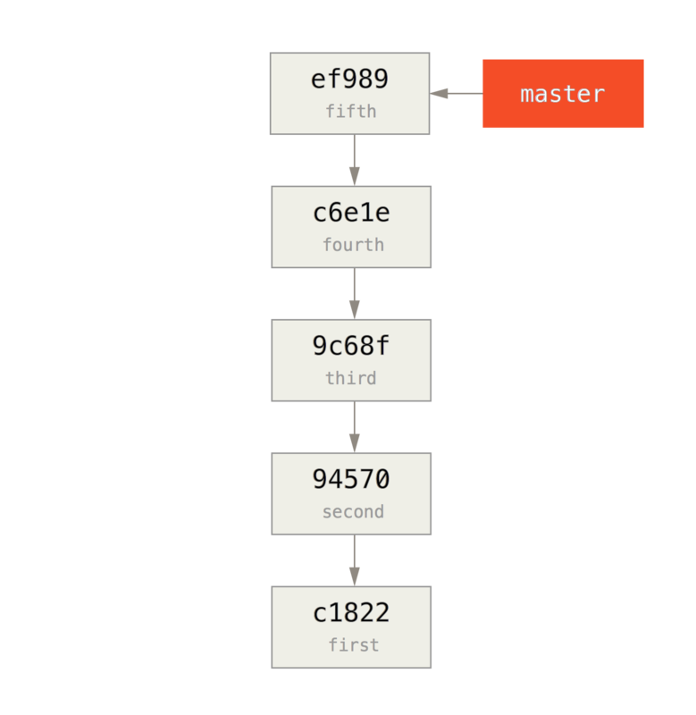
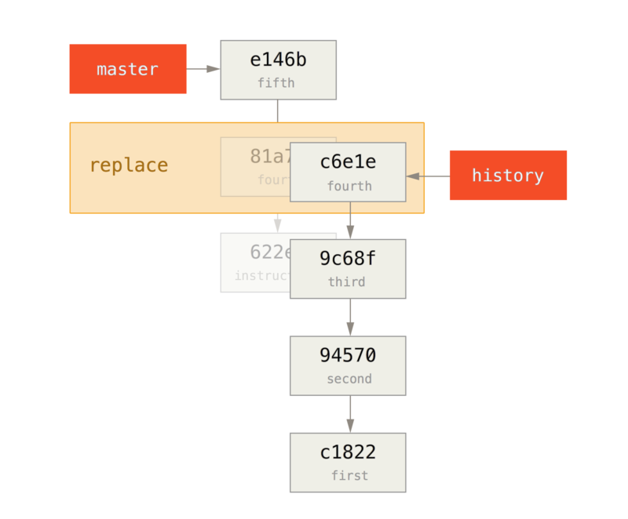

$ git log --oneline
ef989d8 fifth commit
c6e1e95 fourth commit
9c68fdc third commit
945704c second commit
c1822cf first commit替换
Git 对象是不可改变的，但它提供一种有趣的方式来用其他对象假装替换数据库中的 Git 对象。
replace 命令可以让你在 Git 中指定一个对象并可以声称“每次你遇到这个 Git 对象时，假装它是其他的东西”。
在你用一个不同的提交替换历史中的一个提交时，这会非常有用。
例如，你有一个大型的代码历史并想把自己的仓库分成一个短的历史和一个更大更长久的历史，短历史供新的开发者使用，后者给喜欢数据挖掘的人使用。
你可以通过用新仓库中最早的提交 replace 老仓库中最新的提交来连接历史，这种方式可以把一条历史移植到其他历史上。
这意味着你不用在新历史中真正替换每一个提交（因为历史来源会影响 SHA 的值），你可以加入他们。
让我们来试试吧。
首先获取一个已经存在的仓库，并将其分成两个仓库，一个是最近的仓库，一个是历史版本的仓库，然后我们将看到如何在不更改仓库 SHA 值的情况下通过 replace 命令来合并他们。
我们将使用一个拥有 5 个提交的简单仓库：
我们想将其分成拆分成两条历史。 第一个到第四个提交的作为第一个历史版本。 第四、第五个提交的作为最近的第二个历史版本。

创建历史版本的历史很容易，我们可以只将一个历史中的分支推送到一个新的远程仓库的 master 分支。
$ git branch history c6e1e95
$ git log --oneline --decorate
ef989d8 (HEAD, master) fifth commit
c6e1e95 (history) fourth commit
9c68fdc third commit
945704c second commit
c1822cf first commit现在我们可以把这个新的 history 分支推送到我们新仓库的 master 分支：
$ git remote add project-history https://github.com/schacon/project-history
$ git push project-history history:master
Counting objects: 12, done.
Delta compression using up to 2 threads.
Compressing objects: 100% (4/4), done.
Writing objects: 100% (12/12), 907 bytes, done.
Total 12 (delta 0), reused 0 (delta 0)
Unpacking objects: 100% (12/12), done.
To git@github.com:schacon/project-history.git
* [new branch] history -> master这样一来，我们的历史版本就发布了。 稍难的部分则是删减我们最近的历史来让它变得更小。 我们需要一个重叠以便于用一个相等的提交来替换另一个提交，这样一来，我们将截断到第四、五个提交。
$ git log --oneline --decorate
ef989d8 (HEAD, master) fifth commit
c6e1e95 (history) fourth commit
9c68fdc third commit
945704c second commit
c1822cf first commit在这种情况下，创建一个能够指导扩展历史的基础提交是很有用的。 这样一来，如果其他的开发者想要修改第一次提交或者其他操作时就知道要做些什么，因此，接下来我们要做的是用命令创建一个最初的提交对象，然后将剩下的提交（第四、第五个提交）变基到它的上面。
为了这么做，我们需要选择一个点去拆分，对于我们而言是第三个提交（SHA 是 9c68fdc）。因此我们的提交将基于此提交树。我们可以使用 commit-tree 命令来创建基础提交，这样我们就有了一个树，并返回一个全新的、无父节点的 SHA 提交对象。
$ echo 'get history from blah blah blah' | git commit-tree 9c68fdc^{tree}
622e88e9cbfbacfb75b5279245b9fb38dfea10cf|
Note
|
|
现在我们已经有一个基础提交了，我们可以通过 git rebase --onto 命令来将剩余的历史变基到基础提交之上。--onto 参数是刚才 commit-tree 命令返回的 SHA 值，变基点会成为第三个提交（我们想留下的第一个提交的父提交，9c68fdc）：
$ git rebase --onto 622e88 9c68fdc
First, rewinding head to replay your work on top of it...
Applying: fourth commit
Applying: fifth commit
我们已经用基础提交重写了最近的历史，基础提交包括如何重新组成整个历史的说明。 我们可以将新历史推送到新项目中，当其他人克隆这个仓库时，他们仅能看到最近两次提交以及一个包含上述说明的基础提交。
现在我们将以想获得整个历史的人的身份来初次克隆这个项目。 在克隆这个截断后的仓库后为了得到历史数据，需要添加第二个远程的历史版本库并对其做获取操作：
$ git clone https://github.com/schacon/project
$ cd project
$ git log --oneline master
e146b5f fifth commit
81a708d fourth commit
622e88e get history from blah blah blah
$ git remote add project-history https://github.com/schacon/project-history
$ git fetch project-history
From https://github.com/schacon/project-history
* [new branch] master -> project-history/master现在，协作者在 master 分支中拥有他们最近的提交并且在 project-history/master 分支中拥有过去的提交。
$ git log --oneline master
e146b5f fifth commit
81a708d fourth commit
622e88e get history from blah blah blah
$ git log --oneline project-history/master
c6e1e95 fourth commit
9c68fdc third commit
945704c second commit
c1822cf first commit为了合并它们，你可以使用 git replace 命令加上你想替换的提交信息来进行替换。
这样一来，我们就可以将 master 分支中的第四个提交替换为 project-history/master 分支中的“第四个”提交。
$ git replace 81a708d c6e1e95现在，查看 master 分支中的历史信息，显示如下：
$ git log --oneline master
e146b5f fifth commit
81a708d fourth commit
9c68fdc third commit
945704c second commit
c1822cf first commit很酷，是不是？不用改变上游的 SHA-1 我们就能用一个提交来替换历史中的所有不同的提交，并且所有的工具（bisect，blame 等）也都奏效。

有趣的是，即使是使用了 c6e1e95 提交数据来进行替换，它的 SHA-1 仍显示为 81a708d。
即使你运行了 cat-file 命令，它仍会显示你替换的数据：
$ git cat-file -p 81a708d
tree 7bc544cf438903b65ca9104a1e30345eee6c083d
parent 9c68fdceee073230f19ebb8b5e7fc71b479c0252
author Scott Chacon <schacon@gmail.com> 1268712581 -0700
committer Scott Chacon <schacon@gmail.com> 1268712581 -0700
fourth commit请记住，81a708d 真正的父提交是 622e882 占位提交，而非呈现的 9c68fdce 提交。
另一个有趣的事情是数据将会以以下引用显示：
$ git for-each-ref
e146b5f14e79d4935160c0e83fb9ebe526b8da0d commit refs/heads/master
c6e1e95051d41771a649f3145423f8809d1a74d4 commit refs/remotes/history/master
e146b5f14e79d4935160c0e83fb9ebe526b8da0d commit refs/remotes/origin/HEAD
e146b5f14e79d4935160c0e83fb9ebe526b8da0d commit refs/remotes/origin/master
c6e1e95051d41771a649f3145423f8809d1a74d4 commit refs/replace/81a708dd0e167a3f691541c7a6463343bc457040这意味着我们可以轻而易举的和其他人分享替换，因为我们可以将替换推送到服务器中并且其他人可以轻松地下载。 也许在历史移植情况下不是很有用（既然每个人都乐意下载最新版本和历史版本，为何还要拆分他们呢？），但在其他情况下仍然很有用。